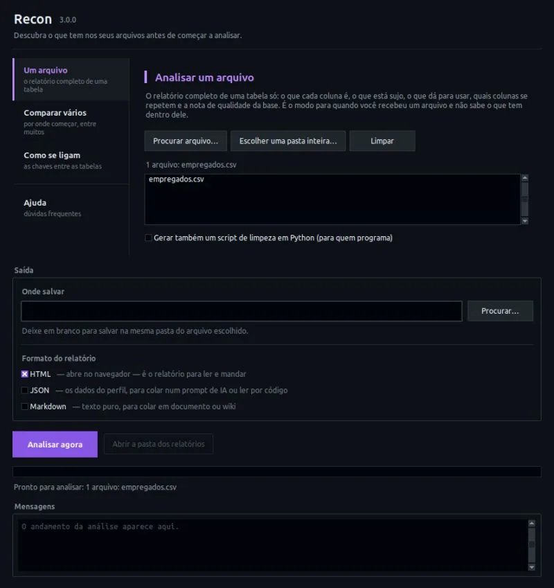
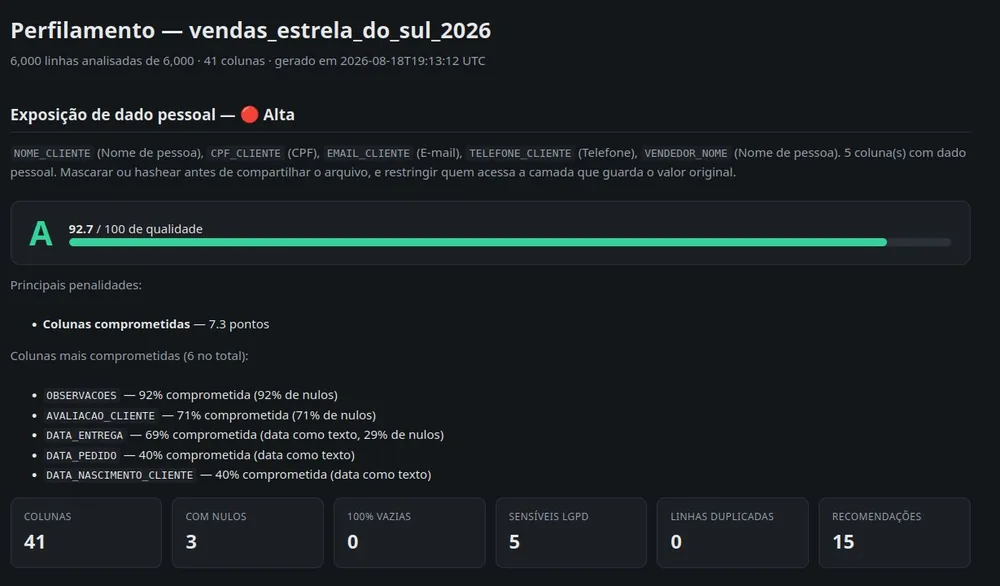
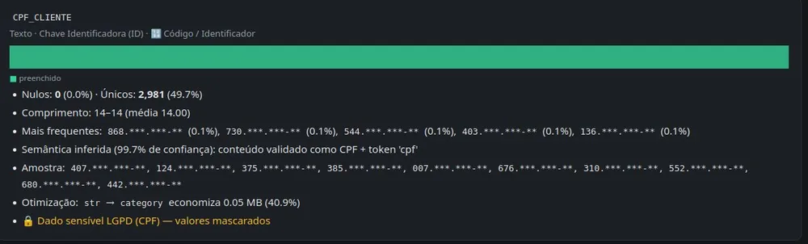
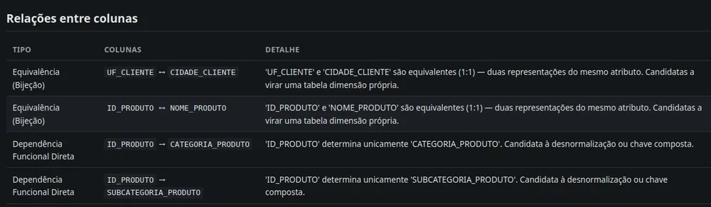
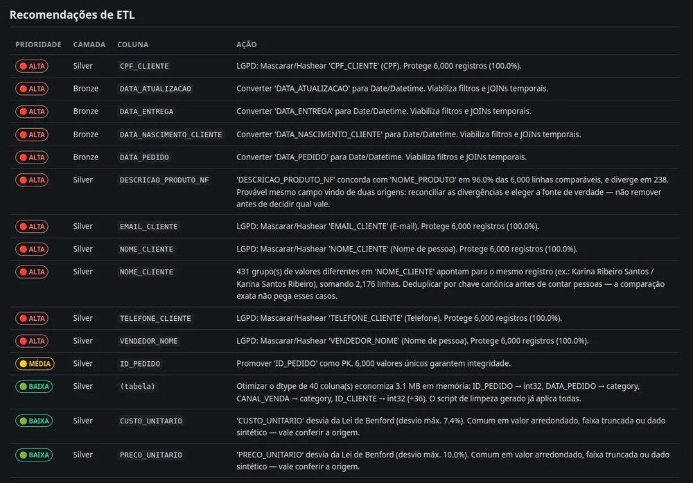

Recon
Ver repositório →Ferramenta de linha de comando que perfila arquivos de dados antes da análise. Infere o que cada coluna representa mesmo com nome abreviado, roda estatística avançada (teste de Shapiro-Wilk, qui-quadrado com V de Cramér, correlação de Pearson/Spearman, seleção de distribuição por AIC, ADF e Ljung-Box em série temporal), cruza tabelas pra descobrir quem é fato e quem é dimensão e monta o diagrama ER, valida regra de negócio entre colunas, detecta CPF e CNPJ validando o dígito verificador e mascara antes de expor, e sugere as análises certas já com código pandas e SQL prontos pra rodar.




